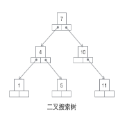
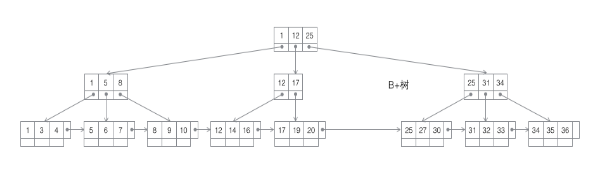
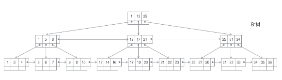
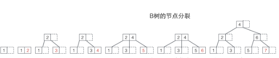
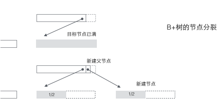
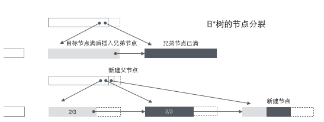
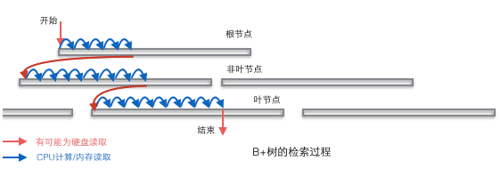
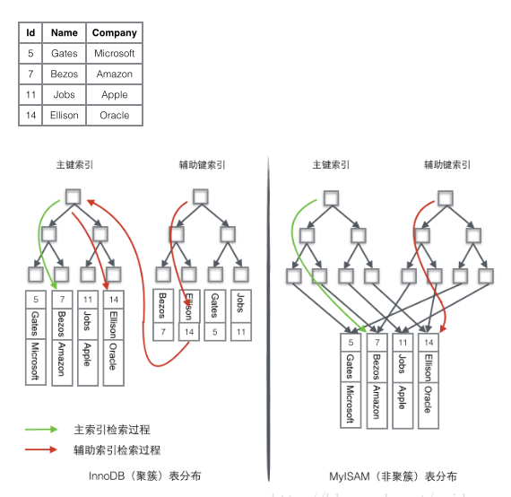

1 各种树的结构
1）搜索二叉树
每个节点有两个子节点，数据量的增大必然导致高度的快速增长，显然不适合作为大量数据存储的基础结构。

2）b树
一个m阶的b树是一棵平衡的m路搜索树，最重要的性质是每个非根节点所包含的关键字节点数j满足┌m/2┐ -1 <= j <= m-1;一个节点的子节点数量会比关键字数多1，这样关键字就成了子节点的分割标志。数据同时存在于叶子节点和非叶子节点中，无法简单完成顺序遍历B树中的关键字，必须用中序遍历的方法。

3）B+树
一个m阶的B树是一棵平衡的m路搜索树，其最重要的性质是每个非根节点所包含的关键字个数j满足┌m/2┐ -1 <= j <= m；每个节点中关键字的个数最多可以与子树一样多，非叶节点存储的是子树中最小的关键字。同时数据节点只存在于叶子节点中，且也只节点间增加了横向指针，这样顺序遍历所有数据将变得非常容易。

4）B*树
一个m阶B树是一棵平衡的m路搜索树，最重要的性质是每个非根节点所包含的关键字个数j满足┌m2/3┐ -1 <= j <= m；非叶子节点之间添加了横向指针。

B树，B+树和B树在插入数据时，有明显的不同：
1）B树每当一个节点满后，就需要发生分裂，由于B树的非叶子节点同样保存了键值，所以已满节点分裂后的值将分布在三个地方：原节点，原节点的父节点，原节点的新建兄弟节点，分裂可能导致树的高度增加，也可能不影响树的高度。

2）B+树的分裂：当一个节点满时，分配一个新的节点，并将原节点中的1/2的数据复制到新的节点，最后在父节点中增加新节点的指针，B+树的分裂只影响原节点和父节点，不会影响兄弟节点，所以它不需要指向兄弟节点的指针。

3）B树的分类
当一个节点满时，如果它的下一个兄弟节点未满，那么僵一部分数据移到兄弟节点中，并在原节点中插入关键字，最后修改父节点中兄弟节点的关键字。如果兄弟节点也满了，则在原节点与兄弟节点之间增加新节点，并各复制1/3的数据到新节点，最后在父节点增加新节点的指针。
B*树的分裂巧妙在其在分裂后的节点还要2/3满，如果采用B+树，则只是见得将已满节点一分为二，这样会导致每个节点只有1/2未满。

B+树为数据库的基础结构
B+树是和作为数据的基础节都，完全是因为计算机的内存-机械硬盘两层存储结构。内存可以完成快速的随机访问，但是容量很小，而硬盘的随机访问要经过机械动作，访问的效率比内存低几个数量级，但硬盘容量较大，典型的数据库容量大大超过了可用内存的大小，这就决定了在B+树种检索一条数据很可能需要借助几次磁盘IO操作来完成。

通常向下读取一个节点的动作可能会是一次磁盘IO操作，不过非叶子节点通常会在初始阶段载入内存以加速访问速度。
Mysql的存储引擎和索引
高性能的数据库应当加索引，没有索引则检索过程变成了顺序查找.一个只有单关键字组成的表只要将关键字存储到树的节点即可，当数据库一条记录包含多个字段时，一棵B+树将只能存储主键，如果检索的是非主键字段，则主键索引失去作用，又变成了顺序查找。需要要在第二个要检索的列上建立第二套索引，这个索引由独立的B+树来组织。
有两种常见的方法可以解决多个B+树访问一套表数据的问题。一种叫做聚簇索引，一种叫非聚簇索引。对于聚簇索引来说，行数据和主键B+树存储在一起，辅助键B+树只存储辅助键和主键，主键和非主键B+树几乎是两种类型的树；对于非聚簇索引存储来说，辅助键B+树在叶子节点存储指向真正数据行的指针，而非主键；
InnoDB使用的是聚簇索引，将主键组织到一棵B+树种，而行数据就存储在叶子节点上，若使用主键进行查找，则按照B+树的检索算法即可查找到对应的叶节点，之后获得行数据。若使用非主键进行条件搜索，则需要：1）在辅助索引B+树种检索，达到其叶子节点获取对应的主键；2）使用主键在主索引B+树中再执行一次B+树检索操作，最终到达叶子节点，即可获取整行数据。
MyISM使用的是非聚簇索引，非聚簇索引的两棵B+树没有什么不同，节点结构完全一致，只是存储的内容不同而已，主键索引B+树的节点存储了主键，辅助键B+树存储了辅助键。表数据存储在独立的地方，这两棵B+树的叶子节点都是用一个地址指向真正的表数据。对于表数据来说，两个键没有任何区别。
假设一个表有4行数据，Id是主索引，Name是辅助索引，则聚簇索引和非聚簇索引的差异如下图所示：

局促索引的优势在于：
1）由于行数据和叶子节点存储在一起，这样主键和行数据是一起被载入内存的，找到叶子节点就可以立刻将行数据返回了，如果按照主键Id来组织数据，获得数据更快；
2）辅助索引使用主键作为指针，而不是使用地址值作为指针的好处是，减少了当出现行移动或者数据页分裂时辅助索引的维护工作，使用主键值当作指针会让辅助索引占用更多的空间，好处是InnpDB在移动行时无需更新辅助索引中的指针。
小结：
Mysql数据库的InnoDB引擎使用的是B+树的存储结构，索引使用的是聚簇索引，这大大提高了其性能；